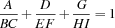
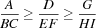
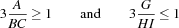

| - Up - | Next >> |
The Fractions Puzzle consists in finding distinct nonzero digits such that the following equation holds:

We have a variable for every letter, similar as in the Send More Money Puzzle. Since the three fractions are symmetric, we can impose the order

From the order constraints we obtain the redundant constraints

The order constraints together with the redundant constraints reduce the size of the search tree by one order of magnitude.
We distribute on the list of letters using the standard first-fail strategy.
proc {Fractions Root}
sol(a:A b:B c:C d:D e:E f:F g:G h:H i:I) = Root
BC = {FD.decl}
EF = {FD.decl}
HI = {FD.decl}
in
Root ::: 1#9
{FD.distinct Root}
BC =: 10*B + C
EF =: 10*E + F
HI =: 10*H + I
A*EF*HI + D*BC*HI + G*BC*EF =: BC*EF*HI
%% impose canonical order
A*EF >=: D*BC
D*HI >=: G*EF
%% redundant constraints
3*A >=: BC
3*G =<: HI
{FD.distribute ff Root}
endFigure 7.1: A script for the Fractions Puzzle.
The script in Figure 7.1 constrains its root variable to a record having a field for every letter. Since Oz has no finite domain propagators for fractions, we eliminate the fractions by multiplying with the denominators. For every denominator we introduce an auxiliary variable. Since a finite domain propagator starts its work only after all variables of the constraint implemented by the propagator are constrained to finite domains in the constraint store, the script constrains the auxiliary variables for the denominators to the maximal finite domain using the procedure FD.decl.
| - Up - | Next >> |